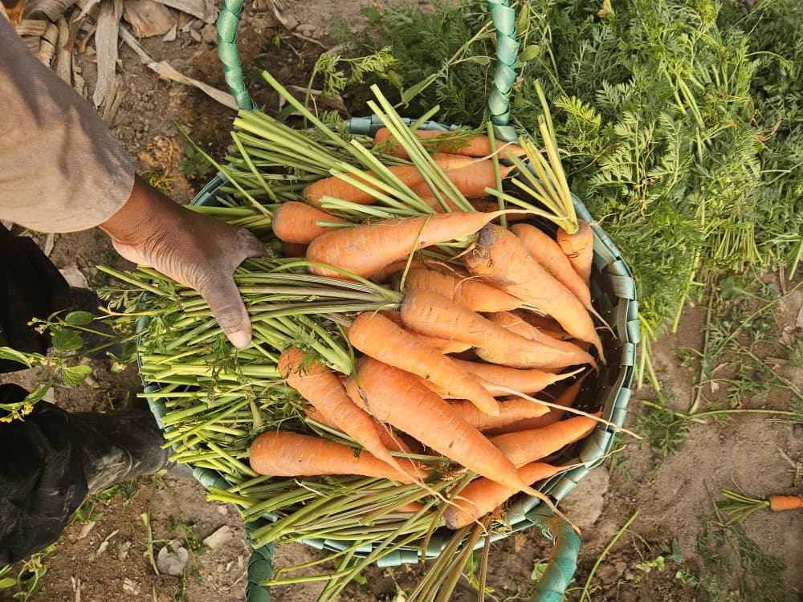
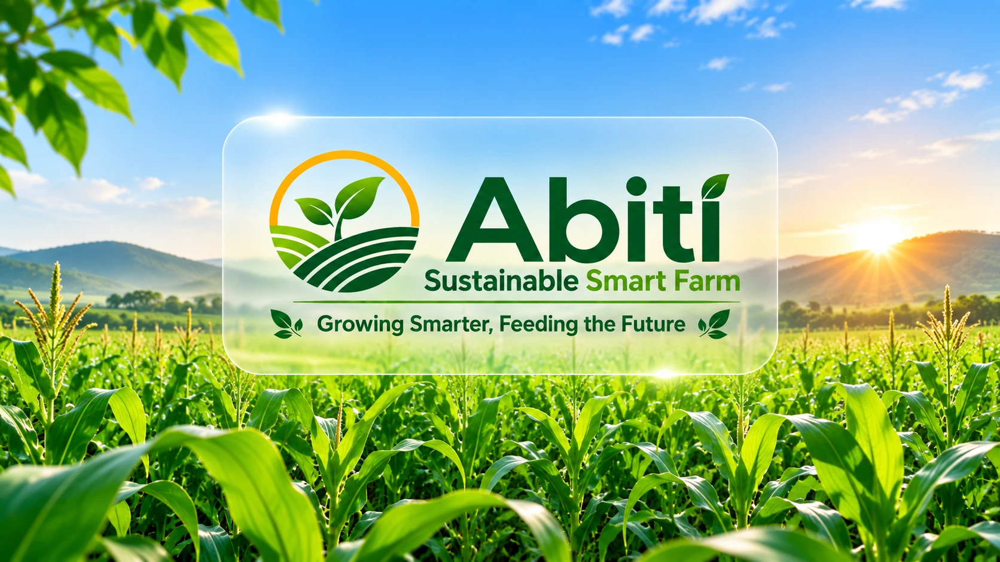
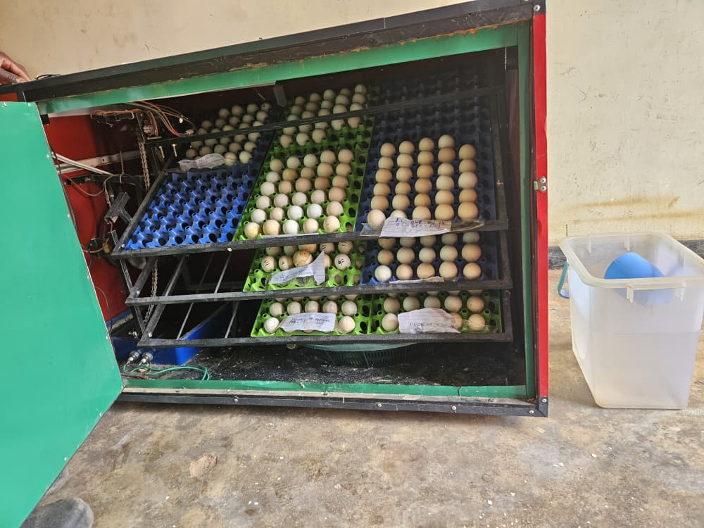

Vegetables and crops
Carrots
Seasonal: ask for current stock
Price on requestper kg
WhatsApp enquiry about Carrots (opens in a new tab)
Abiti Sustainable Smart Farm is a growing Malawian agribusiness based in Thandaza, Mzuzu. We combine crop production, fish farming, livestock and sustainable agricultural innovations to produce quality food, promote responsible farming and create opportunities for communities.

Welcome to Abiti
Not simply a vegetable farm. An integrated agricultural enterprise.
We combine crop production, aquaculture, livestock farming, sustainable agricultural innovation and community development.

The farm in numbers
What we do
Established enterprises, an established Black Soldier Fly setup and new projects still under development, each labelled with its real status.

Tomatoes, cabbages, carrots, beetroot, onions, green peppers and leafy vegetables

Fish ponds within the integrated system

Part of our diversified enterprise

Chicks and incubation services
 Setup established
Setup establishedLarvae for feed, frass for soil
Being developed as a supplementary feed

Climate-smart farming, women, youth and local farmers

A service for other farmers
Our long-term vision
How our activities are being connected into a circular farming model, where the by-products of one enterprise can become useful inputs for another. Select any activity to follow its connections.
Work with us
We supply households, schools, restaurants, hotels, juice bars, supermarkets, retailers and bulk buyers. Tell us what you need and how often, and we will reply with availability and a quotation.
We welcome NGOs, agricultural development organisations, farmer organisations, women and youth empowerment programmes, investors, grant providers and research institutions.
Products and services
For households, schools, hotels, restaurants and retailers, plus chicks and incubation for farmers.

Seasonal: ask for current stock

Seasonal: ask for current stock
Subject to availability
Local chicks from day-old to four weeks old.
Available on request
We incubate eggs for other farmers.
A walk through the farm
Her name lives on in our farm. Her spirit lives on in our community.In memory of Martha Sikelo, known as Abiti
Why Abiti

Our Black Soldier Fly setup is established, part of a circular approach to feed and soil.
Part of how we diversify food production and income.
Water, soil health and organic matter managed responsibly.
The legacy behind our name.
Being developed as a supplementary feed for fish and livestock.
Knowledge-sharing and opportunity are part of how we grow.
0991 295 046 for orders, chicks and incubation.
(opens in a new tab)What we stand for
We are building more than a farm: an integrated agricultural enterprise that combines commercial production, innovation, sustainability and inclusive economic development.
About AbitiRequest a supply quotation, order vegetables, chicks and incubation, or talk to us about a partnership.